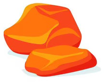
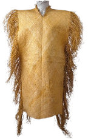
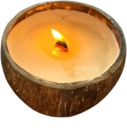
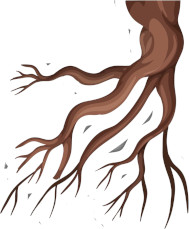

<div class="resources">
  <div class="condition"><span>Hacha de piedra</span></div>
  <div class="condition"><span>Konane</span></div>
  <div class="condition"><span>Lava que no se enfría</span></div>
  <div class="condition"><span>Tiputa flotadora</span></div>
  <div class="condition"><span>Calabaza siempre llena de aire</span></div>
  <div><span>Vela detecta cambiaformas</span></div>
  <div class="condition"><span>Raices de kaba</span></div>
  <div class="condition"><span>Almejas de gran calidad</span></div>
</div>